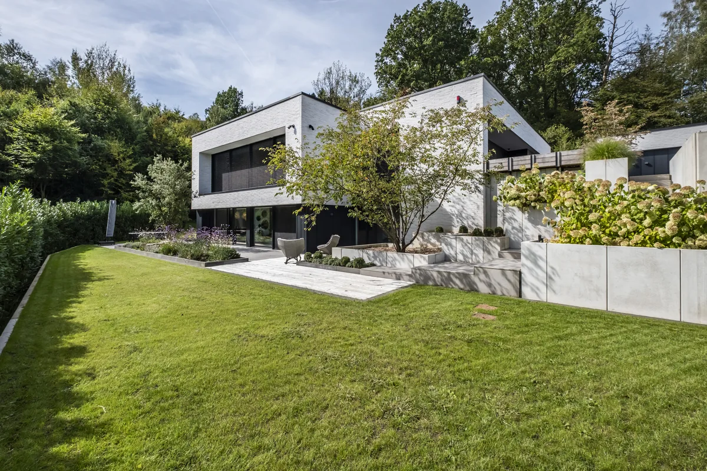
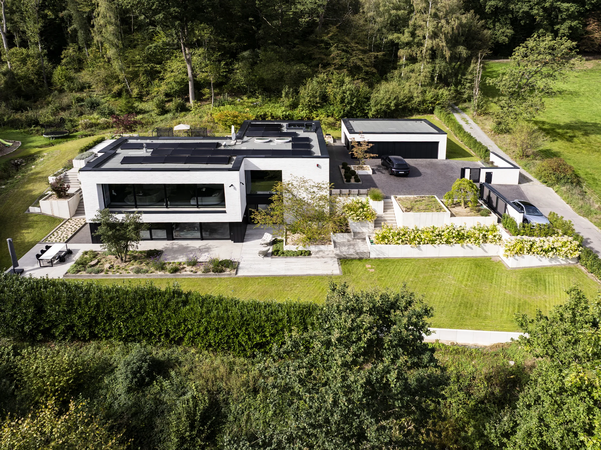
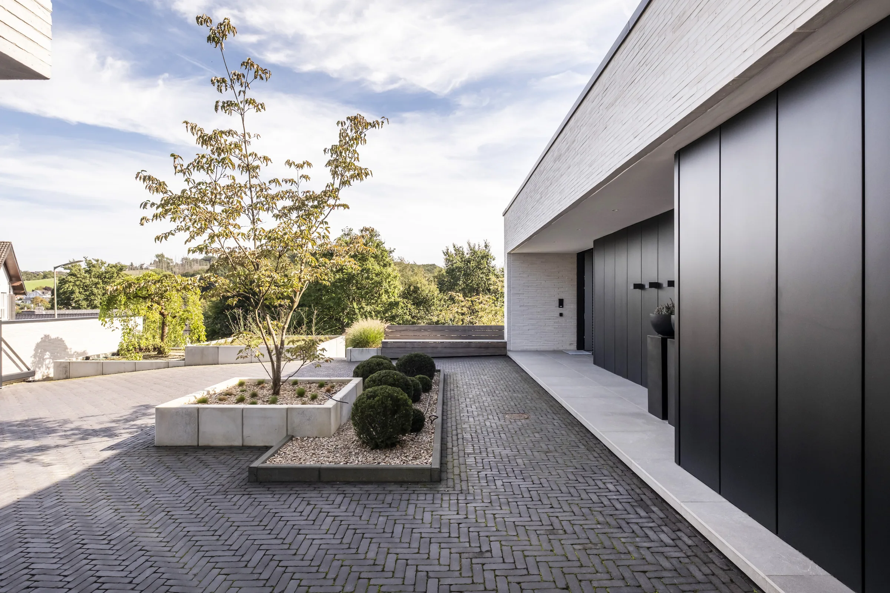
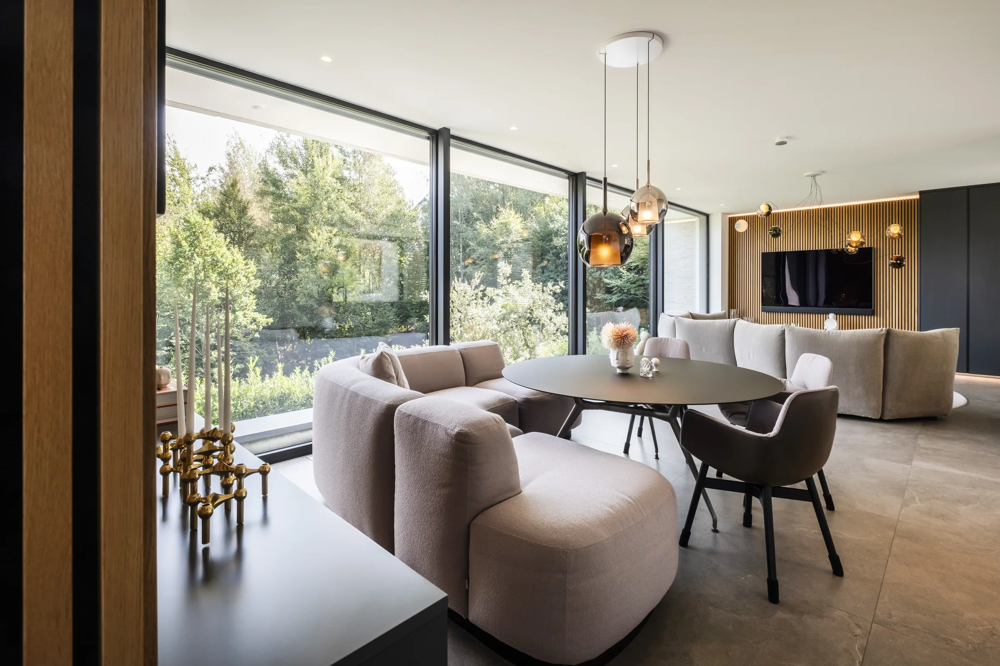
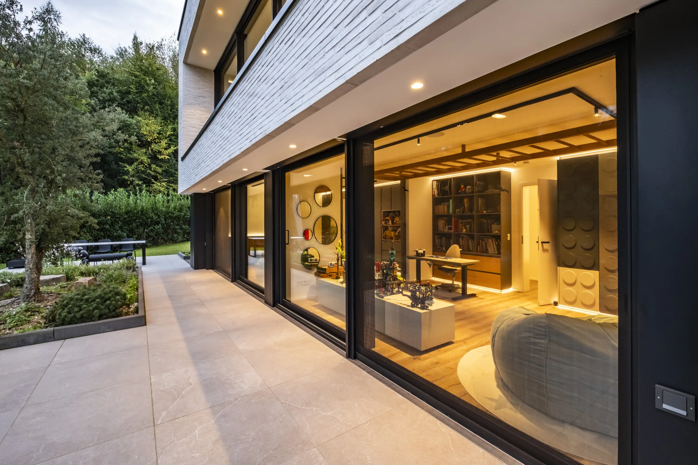

Neues Leben am Hang
Aus einem Bestandshaus wurde ein neues Haus.
Vorher und nachher
Dasselbe Haus, derselbe Standpunkt.
Ziehen Sie den Regler im Bild nach links oder rechts.


Derselbe Standpunkt im Garten: Aus dem Haus mit Satteldächern und Natursteinwand wird ein klarer, heller Baukörper mit breiten Fensterbändern und neuer Terrasse.


Dieselbe Wand von innen: Aus vier einzelnen Fenstern unter der Holzbalkendecke wird eine raumhohe Glasfront. Großformatige Fliesen statt Terrakotta, eine glatte helle Decke.
Das neue Haus

01 / 05Der Winkelbau liegt am Hang, zwischen Wald und Wiese.

02 / 05Im Innenwinkel liegt der Pool, gefasst von einem Holzdeck.

03 / 05Weißer Klinker, dunkle Tafeln, ein gepflasterter Vorplatz.

04 / 05Innen raumhohes Glas. Der Blick geht ins Grüne.

05 / 05Am Abend leuchten die Räume auf die Terrasse.